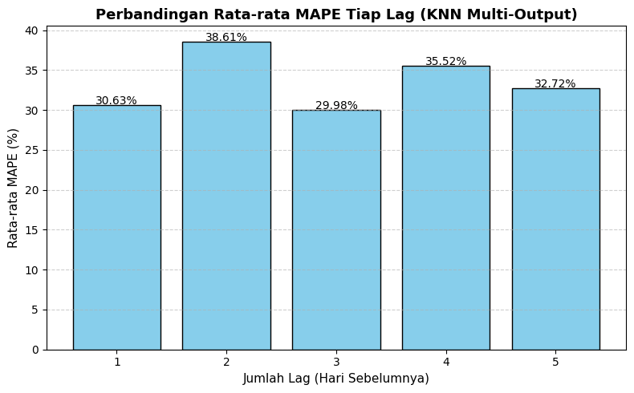
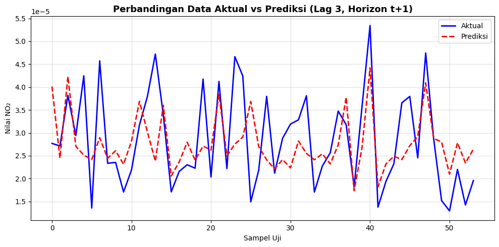

Modelling Data NO2 Kabupaten Bangkalan#
import pandas as pd
import joblib
import os
from sklearn.model_selection import train_test_split
from sklearn.preprocessing import StandardScaler
from sklearn.multioutput import MultiOutputRegressor
from sklearn.neighbors import KNeighborsRegressor
from sklearn.metrics import r2_score, mean_squared_error, mean_absolute_error, mean_absolute_percentage_error
# Buat folder untuk menyimpan model
output_dir = "no2_results"
model_dir = "saved_models"
os.makedirs(model_dir, exist_ok=True)
Modelling#
file_path = f"{output_dir}/day1_supervised.csv"
df = pd.read_csv(file_path)
X = df[[col for col in df.columns if col.startswith('t-')]]
Y = df[[col for col in df.columns if col.startswith('NO2_t+')]]
X_train, X_test, Y_train, Y_test = train_test_split(X, Y, test_size=0.2, random_state=42)
scaler = StandardScaler()
X_train_scaled = scaler.fit_transform(X_train)
X_test_scaled = scaler.transform(X_test)
knn = KNeighborsRegressor(n_neighbors=12)
model = MultiOutputRegressor(knn)
model.fit(X_train_scaled, Y_train)
Y_pred = model.predict(X_test_scaled)
r2 = r2_score(Y_test, Y_pred, multioutput='raw_values')
mse = mean_squared_error(Y_test, Y_pred, multioutput='raw_values')
mae = mean_absolute_error(Y_test, Y_pred, multioutput='raw_values')
mape = mean_absolute_percentage_error(Y_test, Y_pred, multioutput='raw_values')
print("\nHasil untuk Lag 1")
for i in range(len(r2)):
print(f" ├── Horizon t+{i+1}")
print(f" │ R² = {r2[i]:.4f}")
print(f" │ MSE = {mse[i]:.8f}")
print(f" │ MAE = {mae[i]:.8f}")
print(f" │ MAPE = {mape[i]*100:.2f}%")
print(" └───────────────────────────────")
joblib.dump(model, f"{model_dir}/knn_model_day1.pkl")
joblib.dump(scaler, f"{model_dir}/scaler_day1.pkl")
Hasil untuk Lag 1
├── Horizon t+1
│ R² = 0.0460
│ MSE = 0.00000000
│ MAE = 0.00000817
│ MAPE = 28.97%
├── Horizon t+2
│ R² = -0.0456
│ MSE = 0.00000000
│ MAE = 0.00000810
│ MAPE = 31.00%
├── Horizon t+3
│ R² = -0.0030
│ MSE = 0.00000000
│ MAE = 0.00000809
│ MAPE = 31.93%
└───────────────────────────────
['saved_models/scaler_day1.pkl']
file_path = f"{output_dir}/day2_supervised.csv"
df = pd.read_csv(file_path)
X = df[[col for col in df.columns if col.startswith('t-')]]
Y = df[[col for col in df.columns if col.startswith('NO2_t+')]]
X_train, X_test, Y_train, Y_test = train_test_split(X, Y, test_size=0.2, random_state=42)
scaler = StandardScaler()
X_train_scaled = scaler.fit_transform(X_train)
X_test_scaled = scaler.transform(X_test)
knn = KNeighborsRegressor(n_neighbors=12)
model = MultiOutputRegressor(knn)
model.fit(X_train_scaled, Y_train)
Y_pred = model.predict(X_test_scaled)
r2 = r2_score(Y_test, Y_pred, multioutput='raw_values')
mse = mean_squared_error(Y_test, Y_pred, multioutput='raw_values')
mae = mean_absolute_error(Y_test, Y_pred, multioutput='raw_values')
mape = mean_absolute_percentage_error(Y_test, Y_pred, multioutput='raw_values')
print("\nHasil untuk Lag 2")
for i in range(len(r2)):
print(f" ├── Horizon t+{i+1}")
print(f" │ R² = {r2[i]:.4f}")
print(f" │ MSE = {mse[i]:.8f}")
print(f" │ MAE = {mae[i]:.8f}")
print(f" │ MAPE = {mape[i]*100:.2f}%")
print(" └───────────────────────────────")
joblib.dump(model, f"{model_dir}/knn_model_day2.pkl")
joblib.dump(scaler, f"{model_dir}/scaler_day2.pkl")
Hasil untuk Lag 2
├── Horizon t+1
│ R² = 0.0151
│ MSE = 0.00000000
│ MAE = 0.00000900
│ MAPE = 35.27%
├── Horizon t+2
│ R² = -0.0341
│ MSE = 0.00000000
│ MAE = 0.00000949
│ MAPE = 42.87%
├── Horizon t+3
│ R² = 0.0844
│ MSE = 0.00000000
│ MAE = 0.00000987
│ MAPE = 37.69%
└───────────────────────────────
['saved_models/scaler_day2.pkl']
file_path = f"{output_dir}/day3_supervised.csv"
df = pd.read_csv(file_path)
X = df[[col for col in df.columns if col.startswith('t-')]]
Y = df[[col for col in df.columns if col.startswith('NO2_t+')]]
X_train, X_test, Y_train, Y_test = train_test_split(X, Y, test_size=0.2, random_state=42)
scaler = StandardScaler()
X_train_scaled = scaler.fit_transform(X_train)
X_test_scaled = scaler.transform(X_test)
knn = KNeighborsRegressor(n_neighbors=12)
model = MultiOutputRegressor(knn)
model.fit(X_train_scaled, Y_train)
Y_pred = model.predict(X_test_scaled)
r2 = r2_score(Y_test, Y_pred, multioutput='raw_values')
mse = mean_squared_error(Y_test, Y_pred, multioutput='raw_values')
mae = mean_absolute_error(Y_test, Y_pred, multioutput='raw_values')
mape = mean_absolute_percentage_error(Y_test, Y_pred, multioutput='raw_values')
print("\nHasil untuk Lag 3")
for i in range(len(r2)):
print(f" ├── Horizon t+{i+1}")
print(f" │ R² = {r2[i]:.4f}")
print(f" │ MSE = {mse[i]:.8f}")
print(f" │ MAE = {mae[i]:.8f}")
print(f" │ MAPE = {mape[i]*100:.2f}%")
print(" └───────────────────────────────")
joblib.dump(model, f"{model_dir}/knn_model_day3.pkl")
joblib.dump(scaler, f"{model_dir}/scaler_day3.pkl")
Hasil untuk Lag 3
├── Horizon t+1
│ R² = 0.2228
│ MSE = 0.00000000
│ MAE = 0.00000734
│ MAPE = 27.73%
├── Horizon t+2
│ R² = 0.0706
│ MSE = 0.00000000
│ MAE = 0.00000855
│ MAPE = 30.84%
├── Horizon t+3
│ R² = 0.1503
│ MSE = 0.00000000
│ MAE = 0.00000805
│ MAPE = 31.38%
└───────────────────────────────
['saved_models/scaler_day3.pkl']
file_path = f"{output_dir}/day4_supervised.csv"
df = pd.read_csv(file_path)
X = df[[col for col in df.columns if col.startswith('t-')]]
Y = df[[col for col in df.columns if col.startswith('NO2_t+')]]
X_train, X_test, Y_train, Y_test = train_test_split(X, Y, test_size=0.2, random_state=42)
scaler = StandardScaler()
X_train_scaled = scaler.fit_transform(X_train)
X_test_scaled = scaler.transform(X_test)
knn = KNeighborsRegressor(n_neighbors=12)
model = MultiOutputRegressor(knn)
model.fit(X_train_scaled, Y_train)
Y_pred = model.predict(X_test_scaled)
r2 = r2_score(Y_test, Y_pred, multioutput='raw_values')
mse = mean_squared_error(Y_test, Y_pred, multioutput='raw_values')
mae = mean_absolute_error(Y_test, Y_pred, multioutput='raw_values')
mape = mean_absolute_percentage_error(Y_test, Y_pred, multioutput='raw_values')
print("\nHasil untuk Lag 4")
for i in range(len(r2)):
print(f" ├── Horizon t+{i+1}")
print(f" │ R² = {r2[i]:.4f}")
print(f" │ MSE = {mse[i]:.8f}")
print(f" │ MAE = {mae[i]:.8f}")
print(f" │ MAPE = {mape[i]*100:.2f}%")
print(" └───────────────────────────────")
joblib.dump(model, f"{model_dir}/knn_model_day4.pkl")
joblib.dump(scaler, f"{model_dir}/scaler_day4.pkl")
Hasil untuk Lag 4
├── Horizon t+1
│ R² = 0.0608
│ MSE = 0.00000000
│ MAE = 0.00000980
│ MAPE = 33.24%
├── Horizon t+2
│ R² = 0.1515
│ MSE = 0.00000000
│ MAE = 0.00000951
│ MAPE = 38.80%
├── Horizon t+3
│ R² = 0.2031
│ MSE = 0.00000000
│ MAE = 0.00000845
│ MAPE = 34.53%
└───────────────────────────────
['saved_models/scaler_day4.pkl']
file_path = f"{output_dir}/day5_supervised.csv"
df = pd.read_csv(file_path)
X = df[[col for col in df.columns if col.startswith('t-')]]
Y = df[[col for col in df.columns if col.startswith('NO2_t+')]]
X_train, X_test, Y_train, Y_test = train_test_split(X, Y, test_size=0.2, random_state=42)
scaler = StandardScaler()
X_train_scaled = scaler.fit_transform(X_train)
X_test_scaled = scaler.transform(X_test)
knn = KNeighborsRegressor(n_neighbors=12)
model = MultiOutputRegressor(knn)
model.fit(X_train_scaled, Y_train)
Y_pred = model.predict(X_test_scaled)
r2 = r2_score(Y_test, Y_pred, multioutput='raw_values')
mse = mean_squared_error(Y_test, Y_pred, multioutput='raw_values')
mae = mean_absolute_error(Y_test, Y_pred, multioutput='raw_values')
mape = mean_absolute_percentage_error(Y_test, Y_pred, multioutput='raw_values')
print("\nHasil untuk Lag 5")
for i in range(len(r2)):
print(f" ├── Horizon t+{i+1}")
print(f" │ R² = {r2[i]:.4f}")
print(f" │ MSE = {mse[i]:.8f}")
print(f" │ MAE = {mae[i]:.8f}")
print(f" │ MAPE = {mape[i]*100:.2f}%")
print(" └───────────────────────────────")
joblib.dump(model, f"{model_dir}/knn_model_day5.pkl")
joblib.dump(scaler, f"{model_dir}/scaler_day5.pkl")
Hasil untuk Lag 5
├── Horizon t+1
│ R² = 0.2393
│ MSE = 0.00000000
│ MAE = 0.00000856
│ MAPE = 32.43%
├── Horizon t+2
│ R² = 0.0508
│ MSE = 0.00000000
│ MAE = 0.00000876
│ MAPE = 33.56%
├── Horizon t+3
│ R² = 0.1358
│ MSE = 0.00000000
│ MAE = 0.00000741
│ MAPE = 32.18%
└───────────────────────────────
['saved_models/scaler_day5.pkl']
import matplotlib.pyplot as plt
import pandas as pd
from sklearn.metrics import mean_absolute_percentage_error
import joblib
import os
output_dir = "no2_results"
model_dir = "saved_models"
mape_means = []
for lag in range(1, 6):
file_path = f"{output_dir}/day{lag}_supervised.csv"
df = pd.read_csv(file_path)
X = df[[col for col in df.columns if col.startswith('t-')]]
Y = df[[col for col in df.columns if col.startswith('NO2_t+')]]
model = joblib.load(f"{model_dir}/knn_model_day{lag}.pkl")
scaler = joblib.load(f"{model_dir}/scaler_day{lag}.pkl")
from sklearn.model_selection import train_test_split
X_train, X_test, Y_train, Y_test = train_test_split(X, Y, test_size=0.2, random_state=42)
X_test_scaled = scaler.transform(X_test)
Y_pred = model.predict(X_test_scaled)
mape_values = mean_absolute_percentage_error(Y_test, Y_pred, multioutput='raw_values')
mape_mean = mape_values.mean() * 100
mape_means.append(mape_mean)
print(f"Lag {lag}: MAPE rata-rata = {mape_mean:.2f}%")
plt.figure(figsize=(8, 5))
plt.bar(range(1, 6), mape_means, color='skyblue', edgecolor='black')
plt.xlabel('Jumlah Lag (Hari Sebelumnya)', fontsize=11)
plt.ylabel('Rata-rata MAPE (%)', fontsize=11)
plt.title('Perbandingan Rata-rata MAPE Tiap Lag (KNN Multi-Output)', fontsize=13, fontweight='bold')
plt.xticks(range(1, 6))
plt.grid(axis='y', linestyle='--', alpha=0.6)
for i, val in enumerate(mape_means):
plt.text(i + 1, val + 0.1, f"{val:.2f}%", ha='center', fontsize=10)
plt.tight_layout()
plt.show()
Lag 1: MAPE rata-rata = 30.63%
Lag 2: MAPE rata-rata = 38.61%
Lag 3: MAPE rata-rata = 29.98%
Lag 4: MAPE rata-rata = 35.52%
Lag 5: MAPE rata-rata = 32.72%

import pandas as pd
import matplotlib.pyplot as plt
import joblib
from sklearn.model_selection import train_test_split
from sklearn.preprocessing import StandardScaler
lag = 3
output_dir = "no2_results"
model_dir = "saved_models"
file_path = f"{output_dir}/day{lag}_supervised.csv"
df = pd.read_csv(file_path)
X = df[[col for col in df.columns if col.startswith('t-')]]
Y = df[[col for col in df.columns if col.startswith('NO2_t+')]]
model = joblib.load(f"{model_dir}/knn_model_day{lag}.pkl")
scaler = joblib.load(f"{model_dir}/scaler_day{lag}.pkl")
X_train, X_test, Y_train, Y_test = train_test_split(X, Y, test_size=0.2, random_state=42)
X_test_scaled = scaler.transform(X_test)
Y_pred = model.predict(X_test_scaled)
horizon = 1 # 1 = t+1, 2 = t+2, 3 = t+3
y_actual = Y_test.iloc[:, horizon-1].reset_index(drop=True)
y_predicted = pd.Series(Y_pred[:, horizon-1], name="Predicted").reset_index(drop=True)
plt.figure(figsize=(10,5))
plt.plot(y_actual, label='Aktual', color='blue', linewidth=2)
plt.plot(y_predicted, label='Prediksi', color='red', linestyle='--', linewidth=2)
plt.title(f'Perbandingan Data Aktual vs Prediksi (Lag {lag}, Horizon t+{horizon})', fontsize=13, fontweight='bold')
plt.xlabel('Sampel Uji')
plt.ylabel('Nilai NO₂')
plt.legend()
plt.grid(alpha=0.4)
plt.tight_layout()
plt.show()

import pandas as pd
import numpy as np
import joblib
import matplotlib.pyplot as plt
import seaborn as sns
day3 = pd.read_csv(r'g:\Harits Putra Juanaidi\KULIAH\SEMESTER 5\PSD\Iris\Webstatis\PSD\myfirstbook\NO2_Bangkalan (multi prediksi)\no2_results\day3_supervised.csv')
print("Kolom tersedia:", day3.columns.tolist())
no2_column = 't-1'
print("=" * 60)
print("ANALISIS DISTRIBUSI DATA NO₂")
print("=" * 60)
print(f"\n📊 Statistik Deskriptif (menggunakan kolom {no2_column}):")
print(f" Jumlah data : {len(day3)}")
print(f" Mean (μ) : {day3[no2_column].mean():.6f}")
print(f" Median : {day3[no2_column].median():.6f}")
print(f" Std Dev (σ) : {day3[no2_column].std():.6f}")
print(f" Min : {day3[no2_column].min():.6f}")
print(f" Max : {day3[no2_column].max():.6f}")
print("\n📈 Analisis Percentile:")
percentiles = [10, 25, 33, 50, 66, 75, 90]
for p in percentiles:
val = np.percentile(day3[no2_column], p)
print(f" P{p:<3} : {val:.6f}")
print("\n" + "=" * 60)
print("METODE THRESHOLD")
print("=" * 60)
# Metode 1: Percentile (Quartile)
q1 = np.percentile(day3[no2_column], 25)
q3 = np.percentile(day3[no2_column], 75)
print("\n1️⃣ METODE QUARTILE (Q1, Q3)")
print(f" 🟢 RENDAH : ≤ {q1:.6f} (25% terendah)")
print(f" 🟡 SEDANG : {q1:.6f} - {q3:.6f} (50% tengah)")
print(f" 🔴 TINGGI : > {q3:.6f} (25% tertinggi)")
# Metode 2: Tertile (33%, 66%)
t33 = np.percentile(day3[no2_column], 33)
t66 = np.percentile(day3[no2_column], 66)
print("\n2️⃣ METODE TERTILE (33%, 66%)")
print(f" 🟢 RENDAH : ≤ {t33:.6f} (33% terendah)")
print(f" 🟡 SEDANG : {t33:.6f} - {t66:.6f} (33% tengah)")
print(f" 🔴 TINGGI : > {t66:.6f} (33% tertinggi)")
# Metode 3: Standard Deviation
mean = day3[no2_column].mean()
std = day3[no2_column].std()
low_std = mean - 0.5 * std
high_std = mean + 0.5 * std
print("\n3️⃣ METODE STANDARD DEVIATION (μ ± 0.5σ)")
print(f" 🟢 RENDAH : ≤ {low_std:.6f} (< μ - 0.5σ)")
print(f" 🟡 SEDANG : {low_std:.6f} - {high_std:.6f} (μ ± 0.5σ)")
print(f" 🔴 TINGGI : > {high_std:.6f} (> μ + 0.5σ)")
print("\n" + "=" * 60)
print("DISTRIBUSI DATA PADA SETIAP METODE")
print("=" * 60)
methods = {
'Quartile': (q1, q3),
'Tertile': (t33, t66),
'Std Dev': (low_std, high_std)
}
for name, (low, high) in methods.items():
rendah = (day3[no2_column] <= low).sum()
sedang = ((day3[no2_column] > low) & (day3[no2_column] <= high)).sum()
tinggi = (day3[no2_column] > high).sum()
total = len(day3)
print(f"\n{name}:")
print(f" 🟢 RENDAH : {rendah:3d} data ({rendah/total*100:5.1f}%)")
print(f" 🟡 SEDANG : {sedang:3d} data ({sedang/total*100:5.1f}%)")
print(f" 🔴 TINGGI : {tinggi:3d} data ({tinggi/total*100:5.1f}%)")
selected_method = 'Quartile'
low_threshold, high_threshold = q1, q3
thresholds = {
'low': low_threshold,
'medium': high_threshold,
'min': day3[no2_column].min(),
'max': day3[no2_column].max(),
'mean': day3[no2_column].mean(),
'median': day3[no2_column].median(),
'std': day3[no2_column].std(),
'method': selected_method,
'column_used': no2_column
}
import os
os.makedirs('saved_models', exist_ok=True)
output_path = 'saved_models/thresholds_day3.pkl'
joblib.dump(thresholds, output_path)
print(f"\n✅ Threshold tersimpan ke: {output_path}")
print(f" Kolom yang digunakan: {no2_column}")
print(f" Metode: {selected_method}")
print(f" 🟢 RENDAH : ≤ {thresholds['low']:.6f}")
print(f" 🟡 SEDANG : {thresholds['low']:.6f} - {thresholds['medium']:.6f}")
print(f" 🔴 TINGGI : > {thresholds['medium']:.6f}")
Kolom tersedia: ['t-3', 't-2', 't-1', 'NO2_t+1', 'NO2_t+2', 'NO2_t+3']
============================================================
ANALISIS DISTRIBUSI DATA NO₂
============================================================
📊 Statistik Deskriptif (menggunakan kolom t-1):
Jumlah data : 268
Mean (μ) : 0.000028
Median : 0.000025
Std Dev (σ) : 0.000013
Min : 0.000010
Max : 0.000090
📈 Analisis Percentile:
P10 : 0.000015
P25 : 0.000019
P33 : 0.000020
P50 : 0.000025
P66 : 0.000031
P75 : 0.000035
P90 : 0.000046
============================================================
METODE THRESHOLD
============================================================
1️⃣ METODE QUARTILE (Q1, Q3)
🟢 RENDAH : ≤ 0.000019 (25% terendah)
🟡 SEDANG : 0.000019 - 0.000035 (50% tengah)
🔴 TINGGI : > 0.000035 (25% tertinggi)
2️⃣ METODE TERTILE (33%, 66%)
🟢 RENDAH : ≤ 0.000020 (33% terendah)
🟡 SEDANG : 0.000020 - 0.000031 (33% tengah)
🔴 TINGGI : > 0.000031 (33% tertinggi)
3️⃣ METODE STANDARD DEVIATION (μ ± 0.5σ)
🟢 RENDAH : ≤ 0.000022 (< μ - 0.5σ)
🟡 SEDANG : 0.000022 - 0.000034 (μ ± 0.5σ)
🔴 TINGGI : > 0.000034 (> μ + 0.5σ)
============================================================
DISTRIBUSI DATA PADA SETIAP METODE
============================================================
Quartile:
🟢 RENDAH : 67 data ( 25.0%)
🟡 SEDANG : 134 data ( 50.0%)
🔴 TINGGI : 67 data ( 25.0%)
Tertile:
🟢 RENDAH : 89 data ( 33.2%)
🟡 SEDANG : 88 data ( 32.8%)
🔴 TINGGI : 91 data ( 34.0%)
Std Dev:
🟢 RENDAH : 100 data ( 37.3%)
🟡 SEDANG : 97 data ( 36.2%)
🔴 TINGGI : 71 data ( 26.5%)
✅ Threshold tersimpan ke: saved_models/thresholds_day3.pkl
Kolom yang digunakan: t-1
Metode: Quartile
🟢 RENDAH : ≤ 0.000019
🟡 SEDANG : 0.000019 - 0.000035
🔴 TINGGI : > 0.000035